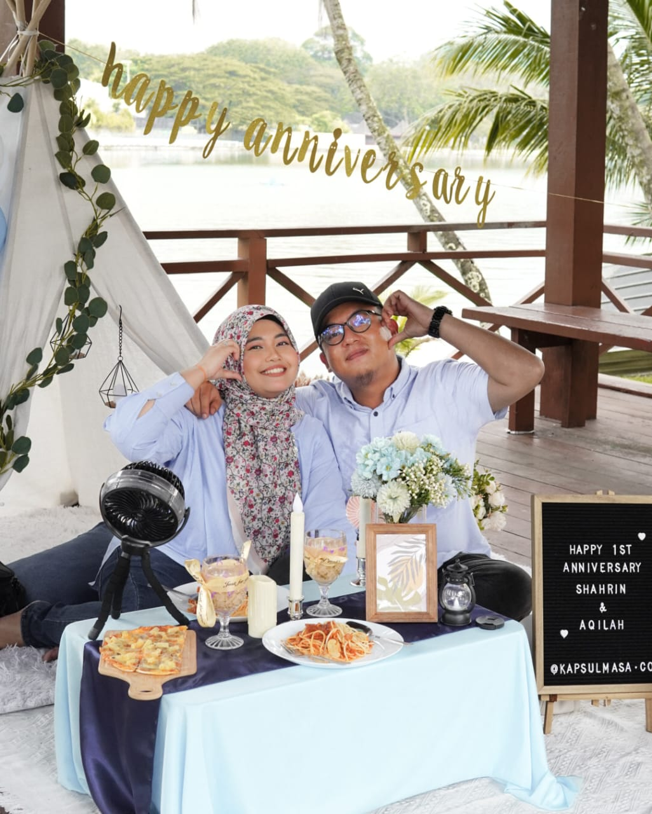
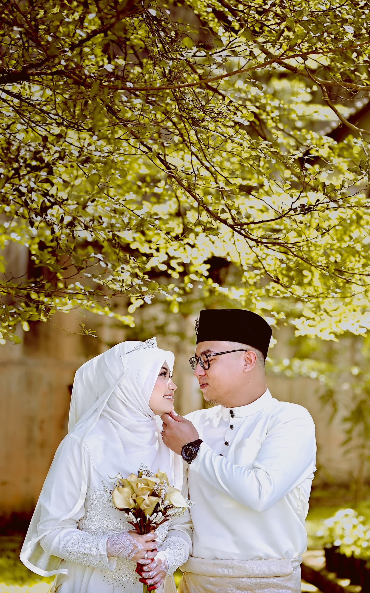

I really hope you're not bored reading this. As you already know, I love writing, drawing, coloring, and capturing moments. I really hope you can get into it, even though these may not be your interests.
I may not be able to give you an expensive gift, but I am giving you a memorable one. I put in effort, time, and skills to create this gift. I'm sorry that I can't treat you to a holiday trip to celebrate our anniversary or even set up a picnic or dinner like we used to celebrate last year. Despite these financial issues, I hope that we will recover after this.

Dear Husband,
I know I'm not perfect, but I always strive to be the best for us. Thank you for being there for me through the ups and downs, especially this year. It's been a tough year, and I know I couldn't have made it through without you. I'm blessed to have you by my side.
We may have faced some storms, but I believe that these past two years have taught us valuable lessons and brought us closer. Honestly, we're getting better at understanding each other. Thank you for being patient with me and for being a wonderful husband. I appreciate how you always think of me, especially when it comes to my favorite foods. I'm beyond grateful for those thoughtful gestures.

Dear Husband,
I cherish creating memorable moments with you. In short, I love spending quality time where we can capture those moments. So, I've prepared this for you. If I were to 'go' before you, you can watch it whenever you want. Life is short, and I want to spend it to the fullest with you.
We might have different opinions sometimes, but that is not a big issue for us. Lastly, let's grow old together. Here's to many more years of growing older with you.